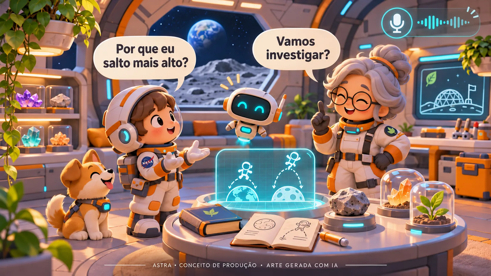

01 / THE INVITATION NASA SPACE APPS CHALLENGE
A child becomes
the astronaut.
What if learning about space began with a mission that needed you?
SPACE IS A SYSTEM. LEARNING CAN BE AN ADVENTURE.
Big questions deserve
small, meaningful choices.
A lunar base is more than a destination. It is a living system of power, life support, food and protection from radiation.
Space engineering trade-offs can feel either oversimplified or too complex. ASTRA makes them approachable: give a young explorer a reason to notice, choose and see what happens next. The goal is curiosity in action, with complexity introduced one decision at a time.
03 / THE MISSION
Every resource
tells a story.
On the Moon, a choice about energy can become a question about water, food and survival. A simple task opens the door to a much bigger system.
AI-ASSISTED CONCEPT ART · PRODUCTION VISIONA MOMENT OF MISSION THINKING
The greenhouse
needs power.
The base has one spare energy unit. Where would you send it first?
This small scenario illustrates the kind of trade-off ASTRA can make visible. It is not a simulation of lunar engineering.
Choose a priority
Choose an option to explore its consequence.

AI-ASSISTED CONCEPT ART / PRODUCTION VISION04 / THE COMPANION
A little help.
A lot of agency.
A friendly companion makes a big world feel possible.
Short prompts, approachable characters and visible feedback can support exploration without taking the mission away from the child. The astronaut remains the one making the choice.
The production vision lets a child choose a dachshund, cat, turtle, human or robot buddy. Photo-inspired avatars, AI dialogue, voice, wearable knowledge badges, a personal home base, parental controls and multiplayer are planned concepts.
05 / WHAT EXISTS TODAY
Vision with
visible boundaries.
The playable demo is a starting point. The wider world shown in the artwork is a production vision.
Playable now
Explore the current mission trainer and experience the foundation for yourself.
Open the demo ↗Checked in development
67 core CPU tests and 16 staged browser checks document technical verification. They are not evidence of human learning outcomes or full GPU acceptance.
Inspect the source ↗Still to discover
Full-route browser acceptance, physical-GPU performance and evaluation with learners remain pending. The next step is a supervised educator pilot, with learning measured through explanation and transfer.
How to read this presentation +
The artwork is AI-generated production vision, not a screenshot or a promise of shipped features. The interaction above is an illustrative editorial scenario. The linked mission trainer is the place to assess the current playable experience.
06 / THE NEXT STEP
A first step
toward the Moon.
For judges, educators and partners: evaluate the mission and help co-design a supervised pilot. Can a learner explain a trade-off and apply it to the next challenge?
THE JUDGES’ PACK
The mission,
in a few minutes.
A three-minute English pitch, a thirty-second Portuguese elevator pitch, and the evidence behind the story.
The concept illustrations and original Portuguese demo interface are preserved as source visuals. Presentation copy and project documentation are in English; the elevator deck is in Portuguese.